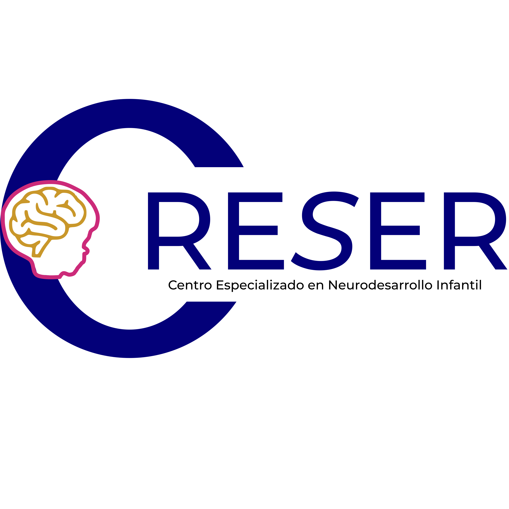

Entiende. Acompaña. Crece.
Evaluación y orientación en neuropsicología infantil para familias que buscan claridad, estructura y acompañamiento profesional en el desarrollo de sus hijos.
Agendar Entrevista Inicial Resolver dudas por WhatsAppNo necesitas diagnóstico previo para iniciar el proceso.
En CRESER somos especialistas en neuropsicología infantil en Mazatlán, ofreciendo evaluación neuropsicológica profesional para niños y adolescentes. Identificamos dificultades de atención (TDAH), aprendizaje, memoria, autismo, problemas de conducta, retrasos en el desarrollo y procesos emocionales. Contamos con servicios de estimulación temprana, orientación a padres y capacitación profesional. Nuestro enfoque integral combina ciencia, calidez y métodos basados en evidencia. Atención especializada en neurodesarrollo infantil en Sinaloa.
Guiamos a las familias con ciencia y calidez para que cada niño encuentre su camino de progreso.
CRESER nace del compromiso de convertir la invisibilidad en posibilidad. Somos un centro especializado en neurodesarrollo que combina evaluación clínica rigurosa con formación práctica para familias y profesionales.
Creemos que la clave del progreso está en un entorno informado: por eso enseñamos a padres a crear estructuras efectivas, colaboramos con escuelas y formamos equipos locales.
CRESER integra ciencia, experiencia clínica y formación continua para ofrecer evaluaciones rigurosas y orientación práctica que realmente impacte en la vida familiar y escolar del niño.
Dirigido por el Neuropsicólogo Clínico Mtro. Jesús Daniel Ballesteros Ponce, CRESER tiene la visión de consolidarse como un espacio de referencia en evaluación, intervención y formación en neurodesarrollo infantil.
No vendemos promesas vacías; brindamos pasos concretos, metas medibles y acompañamiento humano. Aquí, lo distinto no se oculta: se potencia.
"Crecer es natural. CRESER te acompaña."
Dirección Clínica
Neuropsicólogo Clínico | Director Clínico de CRESER
Cédula Profesional: XXXXXXX
Especialista en evaluación y acompañamiento en neurodesarrollo infantil.
"Cada niño merece ser comprendido antes de ser corregido. Mi trabajo es ayudar a las familias a entender el proceso y construir soluciones sostenibles."
Ofrecemos evaluación integral y educación continua para familias y profesionales
Proceso clínico estructurado que permite identificar fortalezas, áreas de oportunidad y necesidades específicas del desarrollo. Incluye devolución clara a padres y plan de acción personalizado.
Agendar esta sesiónTe enseñamos a acompañar con sentido. Sesiones de psicoeducación y herramientas prácticas para apoyar el desarrollo de tu hijo en casa.
Programas diseñados para crear rutinas y estructuras efectivas en el hogar. Aprende a acompañar el desarrollo de tu hijo.
Cursos, talleres y mentorías dirigidos a terapeutas, docentes y profesionales interesados en especializarse en neurodesarrollo infantil.
"Crecer es natural. CRESER lo construye."
Estas son algunas señales que pueden indicar la necesidad de una evaluación profesional
Si a los 2-3 años no habla o pronuncia pocas palabras, o si a los 4-5 años no forma oraciones. También si tiene dificultades para expresar ideas o entender instrucciones.
Si le cuesta mantener la atención en tareas por más de unos minutos, se distrae fácilmente, olvida instrucciones frecuentemente o parece "en otro mundo".
Si presenta berrinches intensos y prolongados, dificultad para seguir reglas, agresividad, desobediencia frecuente o dificultad para relacionarse con otros niños.
Si tiene malas calificaciones, le cuesta aprender a leer, escribir o hacer operaciones matemáticas, o si pasa mucho tiempo haciendo tareas sin avanzar.
Si muestra hiperactividad (no puede quedarse quieto), impulsividad (actúa sin pensar) o desatención que afecta su rendimiento escolar o vida diaria.
Si evita el contacto visual, tiene intereses muy específicos y repetitivos, dificultad para socializar o retrasos en el desarrollo del lenguaje y juego.
Resolvemos tus dudas sobre neuropsicología infantil
La evaluación neuropsicológica infantil es un proceso clínico integral que permite identificar fortalezas, áreas de oportunidad y necesidades específicas del desarrollo cognitivo y emocional del niño. Incluye pruebas estandarizadas especializadas, observación clínica, entrevistas con padres y observación en contexto escolar cuando es necesario. Al finalizar se entrega un informe completo con diagnóstico (si aplica) y plan de recomendaciones personalizado.
Se recomienda cuando el niño presenta: dificultades de atención y concentración (TDAH), problemas de aprendizaje (lectura, escritura, matemáticas), retrasos en el lenguaje, dificultades en habilidades sociales, cambios significativos de conducta, rendimiento escolar inferior al esperado, o cuando los padres sienten que su hijo "es diferente" y no encuentran respuestas claras. La intervención temprana siempre marca una mejor diferencia en el pronóstico.
El TDAH (Trastorno por Déficit de Atención e Hiperactividad) es una condición neurobiológica hereditaria que afecta la capacidad de mantener la atención, controlar impulsos y regular la actividad motora. La evaluación incluye entrevistas clínicas detalladas, escalas de comportamiento llenadas por padres y maestros, pruebas cognitivas estandarizadas (WISC, Conners, etc.) y observación directa. No existe una sola prueba; es un proceso multidimensional que puede durar varias sesiones.
Los signos de autismo pueden incluir: dificultad para establecer contacto visual, intereses muy limitados y repetitivos, retrasos significativos en el lenguaje, dificultad para jugar de forma imaginativa, resistencia a cambios en la rutina, hipersensibilidad a sonidos o texturas, y dificultad para relacionarse con otros niños. Un neuropsicólogo infantil puede realizar una evaluación especializada para determinar si es espectro autista y ofrecer orientación sobre los siguientes pasos.
No, para nada. La mayoría de las familias llegan sin diagnóstico, solo con preocupaciones. El objetivo de la primera entrevista es precisamente evaluar si es necesario realizar una evaluación formal y definir el mejor camino a seguir. Puedes agendar con solo preocupaciones o sospechas, sin necesidad de etiquetas previas. Muchos papás only buscan orientación y eso es completamente válido.
El neuropsicólogo infantil es un psicólogo con especialización adicional en neurología del desarrollo. Evalúa cómo funciona el cerebro del niño y cómo esto afecta su aprendizaje, comportamiento y desarrollo. Utiliza pruebas cognitivas especializadas para entender fortalezas y dificultades. El psicólogo clínico puede ofrecer terapia, pero la evaluación neuropsicológica es más profunda en términos de funcionamiento cognitivo.
El tiempo varía según cada caso y las necesidades específicas: La entrevista inicial dura aproximadamente 60-90 minutos. La evaluación neuropsicológica completa puede tomar de 2 a 4 sesiones (cada una de 2-3 horas). La sesión de devolución de resultados se realiza aproximadamente una semana después de terminar la evaluación. En total, el proceso completo suele durar entre 3 y 6 semanas.
Después de la evaluación recibirás un informe completo y detallado que incluye: perfil cognitivo del niño, hallazgos clínicos, diagnóstico (si aplica), fortalezas identificadas y recomendaciones específicas. En la sesión de devolución explicaremos todo con claridad y responderemos tus preguntas. Además, elaboramos un plan de intervención personalizado que puede incluir: sesiones de estimulación, orientación a padres, recomendaciones escolares o referencia a otros especialistas si es necesario.
Evaluaciones basadas en evidencia científica, comunicación clara con las familias y acompañamiento ético en cada proceso. Nuestro compromiso es orientar con responsabilidad y sensibilidad.
Primera sesión para comprender el caso y definir el plan adecuado.
Proceso de valoración completo según las necesidades identificadas.
Devolución clara con plan de acción personalizado.
Intervención personalizada según las necesidades del niño y la familia.
Estamos aquí para ayudarte. Contáctanos.
Escanea y recibe orientación inicial sin compromiso. Estamos para ayudarte.
💬 Escribenos por WhatsApp